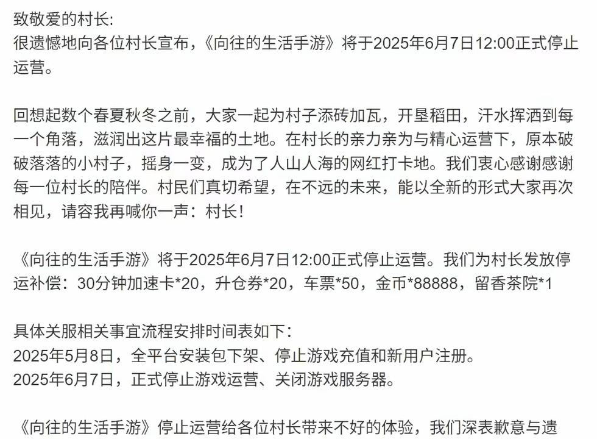

暑期档的现实已经摆在台面上
我对着后台数据盯了半小时，熬到凌晨才确认，那行红色数字不是系统出错：Top50榜单近半数都是新上线产品。这不只是普通的数据波动，赛道内部已经在悄悄重构。当榜单换血率冲到31%，靠老一套混暑期流量的时代，已经结束。

小游戏赛道整体风格偏保守，这次却出现明显分化。《我的花园世界》从13名一路攀升拿下榜首，直接把模拟经营品类的空间打了出来。反观SLG赛道，几乎没有像样的新作上线，全靠两款老产品撑场面。《三国：冰河时代》《无尽冬日》逆势走高，稳住头部前十的席位。榜单剧烈变动背后，到底是用户需求彻底转向，还是市面上好产品太多，互相挤压生存空间？
在行业待久了，我有个很直观的感受。中小开发者眼里恐怖的榜单大换血，恰恰是大厂不愿轻易下场的机会窗口。但现实同样直白：31%的新面孔挤进榜单，表面看是暑期用户追求新鲜感，本质是存量市场下残酷的筛选。
休闲品类崛起，本质是流量重新分配。
不少人以为，榜单上新冒出来的合并消除、模拟经营，会直接抢走SLG的用户。实际数据要更现实。7月Top100榜单里，休闲游戏占到34款，光是模拟经营就有13款成功上榜。

不能只盯着数量看。《我的花园世界》能够突围，是抓住了碎片化场景下，用户想要低负担、强解压的需求。《QQ经典农场》《向往的生活》名次同步上涨十多位，也能说明问题。玩家并没有抛弃重度游戏，只是一部分精力，转移到经营建造带来的轻松快感上。
流量重新分配，对中小开发者提出很实际的要求。如果做不出足够到位的模拟、解压体验，暑期档你能拿到的曝光会非常有限。这不是品类之间互相争斗，是用户用下载和留存，投票选择自己想要的情绪体验。
SLG回暖，靠的是成熟运营，不是硬堆新内容。
再看曾经统治榜单的SLG，7月的热度显得很特殊。没有新SLG冲榜，头部席位依旧被运营多年的老游戏互相争夺。这件事也点透暑期档的核心逻辑：比起新鲜感，用户留存才是真正的底气。

《三国：冰河时代》从11名冲到第3，《无尽冬日》跻身前六。两款产品没有盲目换IP、堆新玩法，重点放在唤醒沉睡老玩家。波克城市塔防产品数量略有下滑，但头部产品的用户占比依旧稳定。三七互娱依靠《斗罗大陆：传承》《镇邪人》打进Top15，也证明休闲大环境之下，强IP搭配轻量化玩法依旧可行。
《斗罗大陆：传承》没有照搬传统RPG无休止战斗的套路，改用消耗资源触发攻击，每隔几段任务就安排BOSS对战。保留魂师、装备、称号这套玩家熟悉的养成体系，同时降低操作门槛。所谓SLG回暖，其实是大厂做了玩法微调，把厚重的策略体验，包装成更容易上手的轻互动。
中小开发者的困境：是抓到窗口期，还是直接被淘汰。
31%的换血率摆在眼前，现实算不上乐观。缺少大厂IP、预算有限的中小团队，现在更像卷入一场生存竞赛。上榜数字只是表象，真正的信号藏在下跌的数据里。上月RPG冠军《西游降妖记》掉18位落到19名，《荒芜之下》直接从Top15跌出74个名次。
两组下跌案例，讲清两件事。只靠堆数值做RPG，暑期已经走不通；SLG头部回暖，但几乎没有新品突围，新人想要挤进去难度极高。抓不住模拟经营风口，又跟不上SLG精细运营节奏的产品，会快速跌出Top50。
不过机会同样存在。大厂扎堆模仿《我的花园世界》这类爆款的时候，恰恰适合往小众方向切入，比如微恐探险、特色主题农场。前提是团队迭代速度要跟得上，不然所谓捡漏，最后只会变成接盘。
洗牌结束，真正的竞争才刚刚开始。
8月榜单竞争已经拉开序幕。《我的花园世界》热度能不能稳住，三七互娱多条产品线会带来怎样的连锁变化，会直接影响接下来一个季度的格局。31%的换血率，代表行业正在完成一轮更新。想在暑期分到一杯羹，犹豫就会落后。市场不会看你的想法，只会看你的产品，能不能接住涌过来的流量。
关于我们
📱 公众号名称：三天游戏
✍️ 作者：曾三天
扫码关注公众号，获取每日最新资讯

商务合作与版权
商务合作 / 内容投稿 / 品牌推广
请关注公众号「三天游戏」后台留言联系
版权声明：本文由作者整理，转载需注明出处。